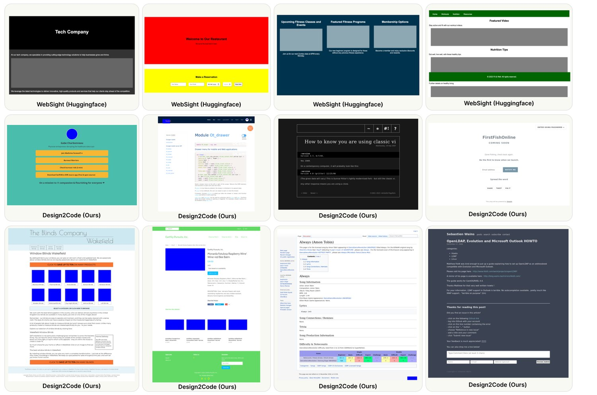
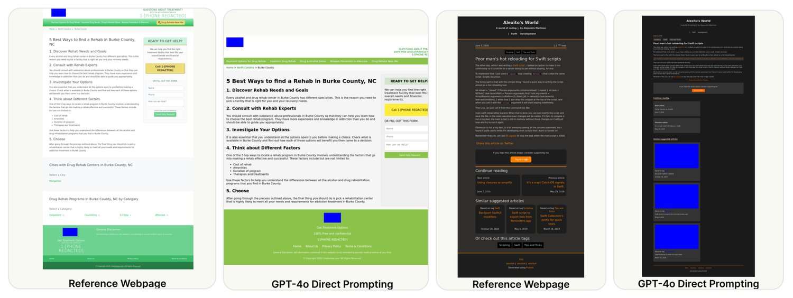
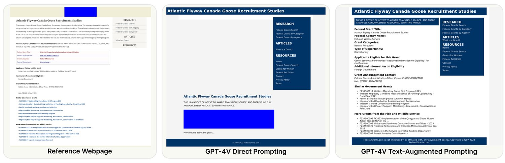
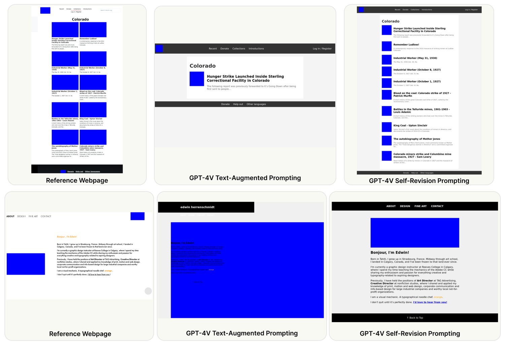
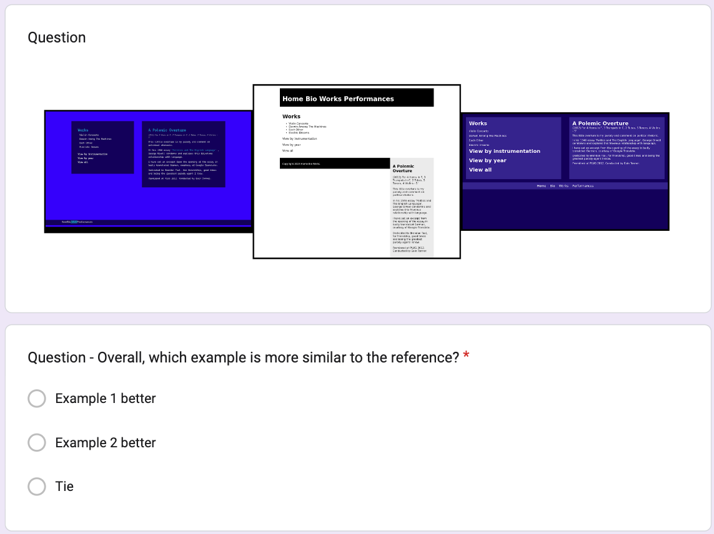
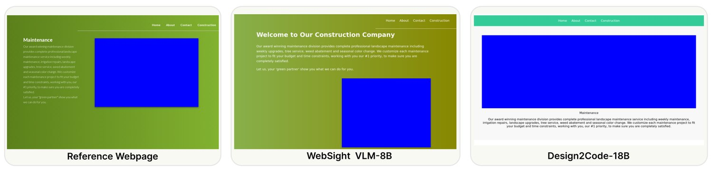

Design2Code: Benchmarking Multimodal Code Generation for Automated Front-End Engineering
Generative AI has made rapid advancements in recent years, achieving unprecedented capabilities in multimodal understanding and code generation. This can enable a new paradigm of front-end development in which multimodal large language models (MLLMs) directly convert visual designs into code implementations. In this work, we construct Design2Code – the first real-world benchmark for this task. Specifically, we manually curate 484 diverse real-world webpages as test cases and develop a set of automatic evaluation metrics to assess how well current multimodal LLMs can generate the code implementations that directly render into the given reference webpages, given the screenshots as input. We also complement automatic metrics with comprehensive human evaluations to validate the performance ranking. To rigorously benchmark MLLMs, we test various multimodal prompting methods on frontier models such as GPT-4o, GPT-4V, Gemini, and Claude. Our fine-grained break-down metrics indicate that models mostly lag in recalling visual elements from the input webpages and generating correct layout designs.

图 1：来自此前 WebSight v0.1 数据集（第一行）与我们新建的 Design2Code 基准（后两行）的示例。我们用真实世界的网页做基准，以保证其真实、多样、复杂；而 WebSight 为可扩展性起见，使用的是合成生成的简单网页。
Implementing visual designs of websites into functional code is a challenging task as it requires understanding visual elements and their layouts and then translating them into structured code. Such dependencies on sophisticated skills have prevented many laypeople from building their own web applications, even when they have concrete ideas for what to build. Furthermore, the requirement for domain expertise complicates the whole webpage production pipeline, requiring collaboration among people with different skill sets and potentially causing discrepancies between the intended design and actual implementation. Effective automatic generation of functional code from visual designs has the potential to democratize the development of front-end web applications (Nguyen and Csallner, 2015), allowing non-experts to build applications easily and quickly.
把网站的视觉设计实现为可用代码是一项富有挑战的任务，它要求先理解视觉元素及其版式，再将其转译为结构化代码。这种对高超技能的依赖，使许多外行人即便对要做什么有明确想法，也无法构建自己的 Web 应用。此外，对领域专长的要求使整个网页生产流程变得复杂，需要不同技能的人协作，并可能在预期设计与实际实现之间造成偏差。若能有效地从视觉设计自动生成可用代码，就有望让前端 Web 应用的开发走向大众化（Nguyen and Csallner, 2015），使非专业人士也能轻松、快速地构建应用。
While code generation from natural language instructions has advanced rapidly in recent years (Yin and Neubig, 2017; Le et al., 2020; Li et al., 2023), generating code implementation from user interface (UI) design has not received much attention due to a wide range of challenges, such as diversity in visual and text signals on the user interface and the vast search space in the resulting code. Beltramelli (2018) made a notable attempt back in 2017 with CNN and RNN models on a narrow set of simplistic UI designs. Over the years, despite many follow-up attempts along this quest (Robinson, 2019; Soselia et al., 2023), they are all constrained to simplistic or synthetic examples with a narrow set of layout designs, hardly useful for real-world front-end development applications. Until recently, the development of multimodal LLMs has entered a new era where large-scale pretrained models can process both visual and text input and generate text output for various visually grounded tasks, with representative examples like Flamingo (Alayrac et al., 2022), GPT-4V (OpenAI, 2023), and Gemini (Google, 2023). Such advancement has unlocked a brand new paradigm for this long-standing unsolved task: give the user’s website design as an image input to the system to obtain the full code implementation that can render into the desired webpage in an end-to-end manner. To systematically and rigorously benchmark current MLLMs on this task, we construct the first-ever real-world benchmark Design2Code.
尽管从自然语言指令生成代码近年来进展迅速（Yin and Neubig, 2017; Le et al., 2020; Li et al., 2023），从用户界面（UI）设计生成代码实现却因种种挑战而未受太多关注——例如界面上视觉与文本信号的多样性，以及所生成代码的巨大搜索空间。Beltramelli（2018）早在 2017 年就用 CNN 与 RNN 模型在一组狭窄的极简 UI 设计上做过一次引人注目的尝试。此后多年，尽管沿这条路线有不少后续尝试（Robinson, 2019; Soselia et al., 2023），它们都局限于极简或合成的样例，版式设计种类单一，对真实世界的前端开发应用几乎无用。直到最近，多模态大语言模型的发展进入新阶段：大规模预训练模型可以同时处理视觉与文本输入，并为各类视觉落地的任务生成文本输出，代表性模型如 Flamingo（Alayrac et al., 2022）、GPT-4V（OpenAI, 2023）与 Gemini（Google, 2023）。这一进展为这项长期未解的任务开启了全新范式：把用户的网站设计作为图像输入给系统，端到端地得到可以渲染成目标网页的完整代码实现。为系统、严谨地对当前 MLLM 在这一任务上建立基准，我们构建了首个真实世界基准 Design2Code。
To best reflect realistic use cases, we use real-world webpages (examples in Figure 1) in the wild as our test examples rather than synthetically generated ones as in prior works (Soselia et al., 2023; Laurencon et al., 2024b). We scrape webpages in the C4 (Raffel et al., 2019) validation set and perform careful manual curation to obtain a set of 484 high-quality, challenging, and diverse webpages representing a wide variety of real-world use cases with different levels of complexities. We show both quantitatively and qualitatively that our benchmark covers a wide spectrum of HTML tag uses, domains, and complexity levels. To facilitate efficient evaluation and model development, we also develop automatic metrics for this task that measure the visual design similarity between the generated webpage’s screenshot and the given screenshot input. Our metrics consider a comprehensive set of dimensions, including bounding box matches, text content, position, and color of all matched visual elements on the webpages, which we later show highly correlate with human judgment.
为最好地反映真实使用场景，我们使用真实世界中采集的网页（示例见图 1）作为测试样例，而不像此前工作那样使用合成生成的网页（Soselia et al., 2023; Laurencon et al., 2024b）。我们从 C4（Raffel et al., 2019）验证集中抓取网页，并经过细致的人工筛选，得到 484 个高质量、有挑战性且多样的网页，代表不同复杂程度的广泛真实用例。我们从定量与定性两方面表明，本基准覆盖了宽广的 HTML 标签使用、领域与复杂度谱系。为便于高效评测与模型开发，我们还为该任务设计了自动指标，度量生成网页截图与给定截图输入之间的视觉设计相似度。我们的指标涵盖一组全面的维度，包括网页上所有匹配视觉元素的边界框匹配、文本内容、位置与颜色，后文将表明它们与人类判断高度相关。
We then investigate how current MLLMs perform on this task, by testing a variety of prompting methods, including our text-augmented prompting that complements visual input with extracted text elements from the webpage to reduce the load on OCR, as well as a self-revision prompting method that asks the model to compare its previous generation and the input webpage for self-improvement. We see significant improvement from text-augmented prompting on most models, while few can self-revise their generation. Additionally, we also construct Design2Code-HARD, a separate set of 80 hard examples, to compare state-of-the-art commercial models (GPT-4o, Claude 3.5 Sonnet) on these challenging cases.
随后我们考察当前 MLLM 在该任务上的表现，测试了多种提示方法，其中包括我们提出的文本增强提示——它用从网页中抽取的文本元素补充视觉输入，以减轻 OCR 的负担——以及一种自我修订提示方法，即要求模型把自己上一次的生成结果与输入网页做比较以求自我改进。我们发现文本增强提示在多数模型上带来显著提升，而具备自我修订能力的模型寥寥无几。此外，我们还构建了一个独立的困难样例集 Design2Code-HARD，含 80 个困难样例，用于在这些挑战性案例上比较最先进的商用模型（GPT-4o、Claude 3.5 Sonnet）。
In this section, we describe the curation and processing of our benchmark data. We first scrape all website links in the C4 (Raffel et al., 2019) validation set. We then embed all CSS code into the HTML file to obtain one single code implementation file for each webpage. This results in a total of 127.9k webpages, which we perform further filtering and processing as described below.
本节介绍基准数据的筛选与处理流程。我们首先抓取 C4（Raffel et al., 2019）验证集中的全部网站链接，然后把所有 CSS 代码嵌入 HTML 文件，为每张网页得到单一的代码实现文件，最终得到 127.9k 张网页，随后按下述步骤做进一步筛选与处理。
图 2：Design2Code 基准中网页的主要主题。
Our overall goal is to obtain a set of well-formed webpages that represent diverse real-world use cases. We follow the following steps for automatic processing and manual filtering: First, we automatically filter out webpages that are too long or too simple (only contain images or texts) and run deduplication, which results in 14k webpages remaining. We then remove external dependencies and replace multimedia content with placeholders. Finally, the first two authors conduct manual curation to check the independence from external files, the absence of sensitive content, and proper formatting. This quality filtering narrows down the samples to 484 high-quality webpages, which are used for our benchmark. More data processing details are described in Appendix Sec B.
我们的总体目标是得到一组格式良好、能代表多样真实用例的网页。我们按以下步骤做自动处理与人工筛选：首先自动过滤掉过长或过简（仅含图像或仅含文本）的网页并执行去重，剩余 14k 张网页。然后去除外部依赖，并把多媒体内容替换为占位文件。最后，由前两位作者进行人工筛选，检查其是否独立于外部文件、是否不含敏感内容、格式是否得当。这一质量筛选把样本收窄到 484 张高质量网页，用于我们的基准。更多数据处理细节见附录 B 节。
Quantitative Metrics To provide an estimate of the difficulty levels of the test examples, we provide some quantitative measures. (1) Length: We tokenize the scraped code files with the GPT-2 tokenizer. The average number of tokens per file is 31216 (min=784, max=98637, std=23903). This is much longer than the typical max output length of modern language models, posing a unique challenge. (2) Total number of tags: We count the total number of HTML tags involved, which is 158 on average (min=12, max=528, std=100). The examples in our benchmark cover 84 types of standard HTML5 tags. We present a chart of the most frequently used tags in Appendix Table 5. (3) DOM tree depth: We measure the depth of the Document Object Model (DOM) tree as another measure of complexity. The average depth is 13 (min=4, max=32, std=5). (4) Number of unique tags: Lastly, we compute the number of unique HTML tags in each example, and the mean is 22 (min=8, max=45, std=6), suggesting that our benchmark covers a wide range of HTML tags. We compare these metrics with the most recent and most similar existing dataset – WebSight (Laurencon et al., 2024b) in Appendix Table 4. Overall, the examples in our benchmark are much more challenging and cover a wider spectrum of complexities than prior efforts like WebSight.
定量指标 为估计测试样例的难度水平，我们给出若干定量度量。（1）长度：我们用 GPT-2 分词器对抓取的代码文件做分词，平均每文件 31216 个 token（最小值=784，最大值=98637，标准差=23903）。这远长于现代语言模型典型的最大输出长度，构成了一项独特挑战。（2）标签总数：我们统计所涉及的 HTML 标签总数，平均为 158 个（最小值=12，最大值=528，标准差=100）。本基准的样例覆盖了 84 种标准 HTML5 标签，最常用标签的图表见附录表 5。（3）DOM 树深度：我们把文档对象模型（DOM）树的深度作为复杂度的另一项度量，平均深度为 13（最小值=4，最大值=32，标准差=5）。（4）唯一标签数：最后我们计算每个样例中唯一 HTML 标签的数量，均值为 22（最小值=8，最大值=45，标准差=6），说明本基准覆盖了广泛的 HTML 标签。我们在附录表 4 中把这些指标与最近、最相似的既有数据集 WebSight（Laurencon et al., 2024b）做了比较。总体而言，本基准的样例比 WebSight 等此前工作更具挑战性，覆盖的复杂度谱系也更宽。
Domain Distribution To get a sense of the range of domains covered in our benchmark, we randomly sample 25% examples (N=120) from the benchmark and manually annotate what type of webpages they are based on their functions. We present the pie chart of the most frequent domains in Figure 2. The most prominent genres are websites of companies or organizations, personal blogs (including technical blogs), and personal homepages. Other genres include information-sharing sites (e.g., Wikipedia pages, FAQ pages, tax policy pages, online dictionaries), online forums, news article pages, and product description pages. Sampled examples are shown in Figure 1.
领域分布 为了解本基准覆盖的领域范围，我们从基准中随机采样 25% 的样例（N=120），并依据其功能人工标注它们属于哪类网页。图 2 给出了最常出现领域的饼图。最突出的类型是公司或组织网站、个人博客（含技术博客）与个人主页。其他类型包括信息共享站点（如维基百科页面、FAQ 页面、税收政策页面、在线词典）、在线论坛、新闻文章页面与产品描述页面。采样样例如图 1 所示。
Previously, auto-generated HTML code is usually evaluated by text-based similarity metrics, such as Normalized Edit Distance (Lv et al., 2023) and htmlBLEU (Soselia et al., 2023). However, such metrics cannot directly assess whether the visual design of the original screenshot is correctly generated as there can be many different ways of implementing the same webpage, and minor differences in generated code could result in major visual differences in the rendered output. To this end, we propose to automatically evaluate generated webpages by calculating the similarity between the screenshots of reference webpages and the rendered screenshots of generated webpages . We break down the evaluation into both high-level visual similarity and low-level element matching.
此前自动生成的 HTML 代码通常用基于文本的相似度指标来评测，如归一化编辑距离（Lv et al., 2023）与 htmlBLEU（Soselia et al., 2023）。然而这类指标无法直接判断原截图的视觉设计是否被正确生成，因为同一个网页可以有多种不同的实现方式，而生成代码上的细微差异可能在渲染结果中造成重大的视觉差异。为此，我们提出通过计算参考网页截图 与生成网页渲染截图 之间的相似度来自动评测生成的网页。我们把评测分解为高层视觉相似度与低层元素匹配两个层面。
High-level Visual Similarity To evaluate the visual similarity of and , we use the similarity of their CLIP (Radford et al., 2021) embedding, denoted as . Specifically, we extract features by CLIP-ViT-B/32 after resizing screenshots to squares. To rule out the texts in the screenshots, we use the inpainting algorithm from Telea (2004) to mask all detected text boxes using their bounding box coordinates. 11 1 https://docs.opencv.org/4.3.0/df/d3d/tutorial_py_inpainting.html
高层视觉相似度 为评估 与 的视觉相似度，我们使用二者 CLIP（Radford et al., 2021）嵌入的相似度，记作 。具体地，我们把截图缩放为正方形后用 CLIP-ViT-B/32 提取特征。为排除截图中的文字，我们使用 Telea（2004）的图像修复算法，依据检测到的文本框的边界框坐标对其进行遮盖。11 1 https://docs.opencv.org/4.3.0/df/d3d/tutorial_py_inpainting.html
Low-level Element Matching Metrics like CLIP similarity only capture the similarity of the overall images rather than the matching of all the details like text. Moreover, the metric itself does not offer any fine-grained breakdown to help diagnose model weaknesses. To complement that, we introduce a suite of element-matching metrics. Specifically, we consider whether the generated webpages manage to recall all visual elements, and whether the corresponding visual elements in the reference and generated webpages have aligned text content, position, and color (Cao, 2015; Still, 2018).
低层元素匹配 CLIP 相似度这类指标只能捕捉整体图像的相似性，无法刻画文本等所有细节的匹配情况；而且该指标本身不提供任何细粒度分解，难以用于诊断模型短板。为补上这一环，我们引入一组元素匹配指标。具体地，我们考察生成的网页是否成功召回全部视觉元素，以及参考网页与生成网页中对应视觉元素的文本内容、位置与颜色是否对齐（Cao, 2015; Still, 2018）。
Given a reference webpage screenshot and a generated webpage screenshot , we use a text detection module to output a set of detected visual element blocks for each: and , where each block contains its textual content and bounding box coordinates. See Appendix C for the details of implementing the block detection module. Based on the two sets of detected blocks, we use the Jonker-Volgenant algorithm (Crouse, 2016) to get the optimal matching between and based on text similarity, where indicates is matched with . Given , , and matched pairs in , we evaluate similarity along the following aspects:
给定参考网页截图 与生成网页截图 ，我们用一个文本检测模块分别为二者输出一组检测到的视觉元素区块： 与 ，其中每个区块包含其文本内容与边界框坐标。区块检测模块的实现细节见附录 C。基于这两组检测到的区块，我们用 Jonker-Volgenant 算法（Crouse, 2016）依据文本相似度求得 与 之间的最优匹配 ，其中 表示 与 相匹配。给定 、 以及 中的匹配对，我们沿以下几个方面评估相似度：
Block-Match: The first desideratum of the task is that all visual elements from the reference webpage should be reproduced in the generated webpage, and the generated webpage should not hallucinate non-existent new elements. We measure this by computing the total sizes of all matched blocks divided by the total sizes of all blocks (Equation (1)(2) in Figure 3), including unmatched ones (either because the generated webpages missed them or because the generated webpages contain hallucinated blocks).
区块匹配：该任务的首要要求是参考网页中的所有视觉元素都应在生成网页中被复现，且生成网页不应幻觉出不存在的新元素。我们用所有匹配区块的大小之和除以所有区块（含未匹配者）的大小之和来度量这一点（图 3 中的式 (1)(2)），未匹配的原因可能是生成网页遗漏了它们，也可能是生成网页包含了幻觉区块。
| (1) | ||||
| (2) |
图 3：计算区块匹配指标的公式。
returns the size of the blocks, and denotes the unmatched blocks in and . The intuition is that unmatched blocks will lower the score as they indicate missing original blocks or generating hallucinated blocks; the larger the unmatched blocks are, the lower this score is.
返回区块的大小， 与 表示 与 中未匹配的区块。其直觉是：未匹配区块会拉低分数，因为它们意味着遗漏了原有区块或生成了幻觉区块；未匹配区块越大，该分数越低。
Text: Given two strings from two matched blocks and , the text similarity is calculated as twice the number of overlapping characters divided by the total number of characters in the two strings (character-level Sørensen-Dice similarity). The overall score is averaged across all matched pairs.
文本：给定两个匹配区块 与 中的两个字符串，文本相似度 按重叠字符数的两倍除以两个字符串的总字符数计算（字符级 Sørensen-Dice 相似度）。总分数在所有匹配对上取平均。
Position: The position of the blocks largely impacts the overall layout. For each matched pair , we calculate the position similarity , where and are normalized coordinates (in ) of and ’s centers. The overall score is averaged across all matched pairs.
位置：区块的位置在很大程度上影响整体版式。对每个匹配对 ，我们计算位置相似度 ，其中 与 分别是 与 中心的归一化坐标（取值在 内）。总分数在所有匹配对上取平均。
Color: We use the CIEDE2000 color difference formula (Luo et al., 2001) to assess the perceptual difference between the colors of the generated text in block and the reference text in block , denoted as , where the formula considers the complexities of human color vision. The overall score is averaged across all matched pairs.
颜色：我们用 CIEDE2000 色差公式（Luo et al., 2001）评估区块 中生成文本的颜色与区块 中参考文本的颜色之间的感知差异，记作 ，该公式考虑了人类色觉的复杂性。总分数在所有匹配对上取平均。
These low-level matching scores are designed as fine-grained diagnostic scores to complement the CLIP score. Ideally, models and methods should score well along all these dimensions.
这些低层匹配分数被设计为细粒度的诊断性分数，用以补充 CLIP 分数。理想情况下，模型与方法应在所有这些维度上都取得好成绩。
We benchmark a variety of models and methods to compare their performance on our benchmark, including commercial API models, open-source models, and finetuned models.
我们对多种模型与方法建立基准，比较它们在本基准上的表现，包括商用 API 模型、开源模型与微调模型。
We test a suite of multimodal prompting methods for our benchmark. We assume access to a model that can take both image input and text prompts and produce code as output.
我们为本基准测试了一组多模态提示方法。我们假设可以使用一个既能接收图像输入与文本提示、又能输出代码的模型。
Direct Prompting We provide the reference webpage screenshot, along with the instruction to generate the HTML and CSS code (full prompt in Appendix D).
直接提示 我们提供参考网页截图，并给出生成 HTML 与 CSS 代码的指令（完整提示见附录 D）。
Text-Augmented Prompting Direct prompting asks the model to do everything at once: recognize all the text and layout elements and generate the corresponding code. In reality, users often know what content they want to put on their webpage. Instead, they only seek expertise in converting the design into code implementation. To reflect such a setting, we also explore a text-augmented prompting method, where we extract all text elements from the original webpage first and append these texts after the instruction prompt along with the screenshot input. In this setting, we mitigate the difficulty of performing OCR and instead allow the model to focus more on layout design, where the model could copy text content from the prompt and insert it into the correct positions.
文本增强提示 直接提示要求模型一次做完所有事：识别所有文本与版式元素，并生成相应代码。现实中，用户往往清楚自己想在网页上放什么内容，他们需要的只是把设计转换为代码实现这一专业环节。为反映这种设定，我们还探索了一种文本增强提示方法：先从原网页中抽取全部文本元素，再把这些文本连同截图输入一起附在指令提示之后。在这一设定下，我们缓解了执行 OCR 的难度，使模型能把更多精力放在版式设计上——模型可以从提示中复制文本内容并插入到正确位置。
Self-Revision Prompting To test whether the models can visually contrast the websites rendered by their generated code and the reference websites to further improve the code generation, we develop a self-revision prompt where we provide the following as input: (1) the screenshot of the input webpage, (2) the screenshot of the generated webpage from text-augmented prompting, (3) the generated code from text-augmented prompting as the initial solution; then we ask the model to improve the generated implementation code so that the result can look closer to the reference webpage (full prompt is in Appendix D).
自我修订提示 为测试模型能否在视觉上对比由其生成代码渲染出的网站与参考网站，从而进一步改进代码生成，我们设计了一种自我修订提示，输入包括：（1）输入网页的截图；（2）由文本增强提示生成的网页截图；（3）由文本增强提示生成的代码，作为初始解；然后要求模型改进所生成的实现代码，使结果更接近参考网页（完整提示见附录 D）。
We test the three prompting methods on the following commercial models: GPT-4o , GPT-4V (OpenAI, 2023), Claude 3 Opus (Anthropic, 2024), Gemini 1.0 Pro Vision , as well as the following open models: LLaVA-V1.6-Mixtral-7B (Liu et al., 2024), DeepSeek-VL-7B (Lu et al., 2024), Idefics2-8B (Laurencon et al., 2024a). For finetuned models, we test WebSight VLM-8B, which is finetuned from Idefics2-8B on the full WebSight v0.1 dataset (Laurencon et al., 2024b), and our own finetuned Design2Code-18B, a finetuned CogAgent-18B (Hong et al., 2023) on a random subset (20%) of the WebSight (technical finetuning details are in Appendix Sec E).
我们在以下商用模型上测试三种提示方法：GPT-4o、GPT-4V（OpenAI, 2023）、Claude 3 Opus（Anthropic, 2024）、Gemini 1.0 Pro Vision；以及在以下开源模型上测试：LLaVA-V1.6-Mixtral-7B（Liu et al., 2024）、DeepSeek-VL-7B（Lu et al., 2024）、Idefics2-8B（Laurencon et al., 2024a）。微调模型方面，我们测试了 WebSight VLM-8B——它在完整 WebSight v0.1 数据集上由 Idefics2-8B 微调而来（Laurencon et al., 2024b）——以及我们自己微调的 Design2Code-18B，即在 WebSight 的一个随机子集（20%）上微调的 CogAgent-18B（Hong et al., 2023）（技术细节见附录 E 节）。
We present all automatic evaluation results in Table 1. Note that the comparisons here are not apple-to-apple comparisons, given the differences in model sizes and training data. We compare them as they are
我们在表 1 中给出全部自动评测结果。注意，鉴于模型规模与训练数据的差异，此处的比较并非完全对等；我们把它们放在一起比较，是因为它们
| Block | Text | Position | Color | CLIP | |
| GPT-4o | |||||
| Direct | 93.0 | 98.2 | 85.5 | 84.1 | 90.4 |
| Text-Augmented | 92.4 | 98.6 | 84.5 | 83.1 | 89.9 |
| Self-Revision | 92.7 | 98.6 | 84.9 | 83.3 | 90.1 |
| GPT-4V | |||||
| Direct | 85.8 | 97.4 | 80.5 | 73.3 | 86.9 |
| Text-Augmented | 87.6 | 98.2 | 80.2 | 73.0 | 87.2 |
| Self-Revision | 88.8 | 98.1 | 81.1 | 72.9 | 87.2 |
| Claude 3 Opus | |||||
| Direct | 90.2 | 97.5 | 77.9 | 71.4 | 87.0 |
| Text-Augmented | 89.8 | 98.0 | 75.9 | 69.3 | 86.6 |
| Self-Revision | 90.3 | 98.1 | 78.1 | 69.7 | 86.6 |
| Gemini 1.0 Pro Vision | |||||
| Direct | 80.2 | 94.6 | 72.3 | 66.2 | 84.4 |
| Text-Augmented | 84.8 | 96.9 | 70.4 | 66.3 | 84.4 |
| Self-Revision | 84.1 | 96.6 | 70.1 | 66.2 | 84.3 |
| LLaVA 1.6-7B | |||||
| Direct | 50.4 | 87.9 | 69.1 | 63.4 | 84.6 |
| Text-Augmented | 68.4 | 93.0 | 68.7 | 64.0 | 84.5 |
| Self-Revision | 62.6 | 91.0 | 64.7 | 62.6 | 83.8 |
| DeepSeek-VL-7B | |||||
| Direct | 39.7 | 77.0 | 64.6 | 63.8 | 84.5 |
| Text-Augmented | 66.1 | 93.4 | 69.2 | 67.9 | 84.3 |
| Self-Revision | 30.1 | 38.9 | 28.9 | 28.1 | 79.9 |
| Idefics2-8B | |||||
| Direct | 46.7 | 80.3 | 55.9 | 58.9 | 81.7 |
| Text-Augmented | 23.6 | 55.6 | 35.7 | 36.3 | 78.7 |
| Self-Revision | 12.3 | 22.6 | 13.2 | 14.5 | 78.4 |
| Finetuned Models | |||||
| WebSight VLM-8B | 55.9 | 86.6 | 77.3 | 79.4 | 87.6 |
| Design2Code-18B | 78.5 | 96.4 | 74.3 | 67.0 | 85.8 |
表 1：四个细粒度相似度度量与基于 CLIP 的高层视觉相似度的自动评测结果。每个维度的最优结果加粗标示。
the most relevant and accessible baselines for our benchmark. We observe that (1) GPT-4o is the best on all dimensions, while LLaVA 1.6-7B leads open-source models without specific finetuning. With specific finetuning, the performance of open-source models can approach that of commercial models like Gemini 1.0 Pro Vision. (2) Text-augmented prompting successfully increases the block-match score and text similarity score on most tested models, especially those that are suboptimal in terms of text recognition, indicating the usefulness of providing extracted text elements. (3) Self-revision has some minor improvement on block-match and position similarity for GPT-4V and Claude 3, but brings no improvement on Gemini Pro Vision and all other open-source models, potentially due to the limited capabilities of LLMs to do self-revision (Huang et al., 2023). We provide an in-depth analysis of the learning process of our finetuned model in Section H.
是本基准最相关、最易获取的基线。我们观察到：（1）GPT-4o 在所有维度上均最优，而 LLaVA 1.6-7B 在未经专门微调的开源模型中领先；经过专门微调后，开源模型的表现可以逼近 Gemini 1.0 Pro Vision 等商用模型。（2）文本增强提示在多数被测模型上成功提升了区块匹配分数与文本相似度分数，尤其是那些文本识别能力欠佳的模型，说明提供抽取出的文本元素是有效的。（3）自我修订对 GPT-4V 与 Claude 3 的区块匹配与位置相似度有小幅改善，但对 Gemini Pro Vision 及所有其他开源模型均无提升，原因可能在于 LLM 的自我修订能力有限（Huang et al., 2023）。我们在 H 节对所微调模型的学习过程做了深入分析。
While the above automatic metrics provide a fine-grained breakdown of model performance, it is also crucial to ask what users, the ultimate audience of these webpages, think of the generated webpages. By recruiting human annotators (paid at the rate of $16/hour) from Prolific, we conducted a series of human evaluations to compare across models and methods, as well as to assess the quality of AI-generated webpages directly. We sample 100 examples from our benchmark for the human evaluations. In all human evaluations, each question is annotated by human annotators, and we derive the results by majority voting. We provide all instructions that we provided to annotators in Appendix F and we outline the main protocols and results below.
上述自动指标提供了模型表现的细粒度分解，但同样关键的是要问：作为这些网页最终受众的用户，如何看待生成的网页。我们通过 Prolific 招募人工标注者（按每小时 16 美元计酬），开展了一系列人工评测，用于跨模型与方法比较，并直接评估 AI 生成网页的质量。我们从基准中采样 100 个样例用于人工评测。在全部人工评测中，每个问题由 名标注者标注，结果按多数投票得出。我们提供给标注者的全部说明见附录 F，下面概述主要方案与结果。
Pairwise Model Comparison Following the conventional practice of evaluating instruction-following LLMs (e.g., (Zhou et al., 2023; Dubois et al., 2023)), we ask human annotators to rank a pair of generated webpages (one from the baseline, the other from the tested method) to decide which one is more similar to the reference. We use Gemini Pro Vision Direct Prompting as the baseline and collect the other seven methods’ Win/Tie/Lose rates against this baseline (we randomly shuffle the ordering to avoid position biases). Each pair will count as Win (Lose) only when Win (Lose) receives the majority vote (). All other cases are considered Tie.
成对模型比较 沿用评测指令遵循型 LLM 的通行做法（例如（Zhou et al., 2023; Dubois et al., 2023）），我们请标注者对一对生成的网页（一个来自基线，另一个来自被测方法）排序，判断哪一个更接近参考网页。我们以 Gemini Pro Vision 直接提示作为基线，收集其他七种方法相对该基线的胜／平／负率（我们随机打乱顺序以避免位置偏差）。只有当胜（负）获得多数票（）时，该对才计为胜（负）；其他情况一律记为平。
Based on the human evaluation in Figure 4, we find that: (1) GPT-4o is substantially better than other baselines, while neither text-augmented prompting nor self-revision prompting brings substantial improvement, probably due to the fact that direct prompting already correctly generates most of the text content and layout. (2) GPT-4V is the second strongest model, while both text-augmented prompting and self-revision prompting can further improve over direct prompting. (3) Text-augmented prompting can slightly improve the Gemini direct prompting baseline, but further adding self-revision is not helpful. Intuitively, self-revision needs the model to understand the differences between the two given images (the reference screenshot and the screenshot of the initial model generation) and reflect them correspondingly in the modified HTML code, which is harder than leveraging text augmentation and thus might require more advanced model capabilities. (4) WebSight VLM-8B and our model Design2Code-18B match Gemini direct prompting, suggesting that finetuning on a large amount of data can match commercial models in specific domains.
基于图 4 中的人工评测，我们发现：（1）GPT-4o 明显优于其他基线，而文本增强提示与自我修订提示都未带来实质提升，可能是因为直接提示已经正确生成了大部分文本内容与版式。（2）GPT-4V 是第二强的模型，文本增强提示与自我修订提示都能在直接提示之上进一步改善。（3）文本增强提示可略微改善 Gemini 直接提示基线，但再叠加自我修订则无益。直观地说，自我修订要求模型理解两张给定图像（参考截图与模型初始生成的截图）之间的差异，并把这些差异相应反映到修改后的 HTML 代码中，这比利用文本增强更难，因而可能需要更强的模型能力。（4）WebSight VLM-8B 与我们的 Design2Code-18B 与 Gemini 直接提示打平，说明在大量数据上微调可以在特定领域匹敌商用模型。
图 4：以 Gemini Pro Vision 直接提示为基线的人工成对偏好评测结果（该方法本身未出现在表中，因为它充当成对比较的基线）。我们采样 100 个样例，每对比较请 5 名标注者评判，并对每个样例取多数票。胜率越高、负率越低，说明标注者认为质量越好。
Direct Assessment While the automatic and human evaluation offer a comparison among different models and methods, readers might still wonder how good are the best-performing models on this task. To offer a more intuitive answer to this question, we further ask human annotators to compare each reference webpage with the AI-generated webpage (using GPT-4V self-revision prompting) and directly assess the quality of the generated webpage. Concretely, we perform direct assessment from two perspectives (all examples are annotated by 5 annotators, and we take the majority vote; full instructions given to the annotators can be found in Appendix F): (I) Can the AI-generated webpage replace the original webpage? We shuffle the ordering of all examples and ask annotators to judge whether the two webpages are similar enough in terms of appearance and content so that they can be deployed interchangeably. We find that 49% of the AI-generated webpages are considered exchangeable with the reference webpages. (II) Is the reference webpage or AI generation better? We then ask a different question, where we shuffle the example ordering and ask annotators which webpage is better designed (annotators do not know which one is the reference and which one is AI-generated). Perhaps surprisingly, webpages generated by GPT-4V are preferred in 64% cases, i.e., they are considered better designed than even the original reference webpages. We hypothesize it is possible that the model has more access to modern and popular webpage design principles (Ivory and Megraw, 2005; Beaird et al., 2020), such that it can automatically improve the original design based on these best practices. This also opens up many new opportunities for future work on website design improvement tools. We provide some case study examples in Appendix I.
直接评估 自动与人工评测提供了不同模型与方法之间的比较，但读者或许仍想知道：表现最好的模型在这个任务上究竟有多好。为更直观地回答这个问题，我们进一步请标注者把每个参考网页与 AI 生成的网页（使用 GPT-4V 自我修订提示）做比较，直接评估生成网页的质量。具体地，我们从两个角度做直接评估（所有样例由 5 名标注者标注，取多数票；提供给标注者的完整说明见附录 F）：（I）AI 生成的网页能否替代原网页？我们打乱所有样例的顺序，请标注者判断两张网页在外观与内容上是否足够相似，以至于可以互换部署。我们发现 49% 的 AI 生成网页被认为可与参考网页互换。（II）参考网页与 AI 生成结果哪个更好？我们接着换一个问题：打乱样例顺序，请标注者判断哪张网页设计得更好（标注者不知道哪个是参考、哪个是 AI 生成的）。或许出人意料的是，GPT-4V 生成的网页在 64% 的情况下被偏好，即被认为比原始参考网页设计得更好。我们推测，模型可能接触到更多现代流行的网页设计准则（Ivory and Megraw, 2005; Beaird et al., 2020），因而能依据这些最佳实践自动改进原始设计。这也为未来的网站设计改进工具开辟了许多新机会。我们在附录 I 给出若干案例研究示例。
| coef | std err | p | |
|---|---|---|---|
| Block-Match | 0.7429 | 0.142 | 0.000 |
| Text | -0.3541 | 0.153 | 0.021 |
| Position | 0.7605 | 0.139 | 0.000 |
| Color | 0.3461 | 0.107 | 0.001 |
| CLIP | 0.4929 | 0.134 | 0.000 |
表 2：以不同指标为特征、通过逻辑回归预测人类标注（胜／负）的结果。
| Block | Text | Position | Color | CLIP | |
| GPT-4o | |||||
| Direct | 56.6 | 89.8 | 78.6 | 81.9 | 87.1 |
| Text-Augmented | 67.7 | 95.2 | 77.5 | 81.5 | 87.5 |
| Self-Revision | 72.1 | 96.4 | 81.1 | 82.4 | 88.2 |
| GPT-4o Mini | |||||
| Direct | 57.7 | 90.7 | 77.9 | 77.5 | 86.3 |
| Text-Augmented | 69.5 | 97.0 | 77.9 | 79.1 | 86.1 |
| Self-Revision | 70.3 | 96.9 | 77.9 | 78.6 | 86.0 |
| Claude 3.5 Sonnet | |||||
| Direct | 61.7 | 91.1 | 83.0 | 84.4 | 89.5 |
| Text-Augmented | 75.1 | 97.6 | 83.4 | 84.9 | 89.0 |
| Self-Revision | 71.9 | 96.5 | 82.6 | 83.0 | 88.8 |
| Claude 3 Opus | |||||
| Direct | 57.1 | 88.7 | 74.2 | 72.4 | 85.8 |
| Text-Augmented | 73.6 | 97.0 | 75.6 | 72.6 | 85.7 |
| Self-Revision | 73.3 | 95.9 | 76.6 | 70.0 | 85.6 |
| Gemini 1.5 Pro | |||||
| Direct | 72.3 | 95.4 | 80.9 | 80.5 | 87.5 |
| Text-Augmented | 73.7 | 95.9 | 79.8 | 79.1 | 88.2 |
| Self-Revision | 71.2 | 96.6 | 80.9 | 78.4 | 87.9 |
| Gemini 1.5 Flash | |||||
| Direct | 69.2 | 96.6 | 78.0 | 80.2 | 87.3 |
| Text-Augmented | 72.7 | 97.4 | 79.4 | 78.2 | 87.6 |
| Self-Revision | 72.2 | 97.5 | 79.4 | 77.9 | 87.6 |
表 3：Design2Code-HARD 的评测结果。我们展示旗舰级商用模型的结果。

图 5：GPT-4o 直接提示的示例。

图 6：文本增强提示相对直接提示基线有所改善的示例，其中缺失的文本被成功生成出来。

图 7：自我修订提示相对文本增强提示有所改善的示例。自我修订既可以补上缺失的文本，也可以修正版式错误。
It is worth noting that there are some interesting discrepancies between the automatic evaluation results and human evaluation results. For example, human evaluation ranks GPT-4V self-revision prompting better than text-augmented prompting, while the automatic metrics show mixed results. Moreover, even though humans rank WebSight VLM-8B as better than Design2Code-18B, it has much worse block-match and text similarity as measured by the automatic metrics. In this part, we take a closer look at such discrepancy and discuss why such discrepancy is a feature rather than a bug.
值得注意的是，自动评测结果与人工评测结果之间存在一些有趣的分歧。例如，人工评测把 GPT-4V 自我修订提示排在文本增强提示之上，而自动指标给出的结果则好坏参半。此外，尽管人类把 WebSight VLM-8B 排在 Design2Code-18B 之上，它在自动指标下的区块匹配与文本相似度却差得多。在这一部分，我们细察这种分歧，并论述为什么这种分歧是一种特性而非缺陷。
Human annotation replies only on high-level features. We study whether we can predict human pairwise preferences using automatic metrics. Specifically, we randomly split the 100 annotated examples into a 50% training set and a 50% test set, leading to 435 pairwise human annotations (we only consider Win/Lose) for both training and testing. Given one reference and two candidates , we use the difference of each dimension (e.g., ) as features and predict Win () or Lose () by logistic regression 22 2 We normalize the feature before calculating the differences and add a constant term before logistic regression.. The derived logistic regression model achieves 79.9% accuracy on the test set, and the features’ coefficients and significance are in Table 2. Interestingly, we find that text similarity has a negative and least significant association with human judgment. In contrast, all other similarity measures show positive and significant associations with human judgment. This suggests that humans usually pay more attention to high-level visual effects like layouts, colors, and the existence of contents rather than the detailed content, reflecting the top-down processing (Gilbert and Li, 2013) of humans. We argue that human evaluation should not be blindly trusted as the oracle here due to their cognitive bias to only consider “principle components” of the webpages. Instead, both high-level similarity (human pairwise preference and CLIP similarity) and low-level elements (fine-trained block-wise similarity) should be considered when evaluating new models and methods.
人类标注只依赖高层特征。我们研究能否用自动指标预测人类的成对偏好。具体地，我们把 100 个已标注样例随机划分为 50% 训练集与 50% 测试集，训练集与测试集各有 435 条成对人类标注（我们只考虑胜／负）。给定一个参考 与两个候选 ，我们把每个维度的差值（例如 ）作为特征，用逻辑回归预测胜（）或负（）22 2 我们在计算差值前对特征做归一化，并在逻辑回归前加入常数项。所得逻辑回归模型在测试集上达到 79.9% 的准确率，各特征的系数与显著性见表 2。有意思的是，我们发现文本相似度与人类判断呈负相关且最不显著；相反，其他所有相似度度量都与人类判断呈显著正相关。这说明人类通常更关注版式、颜色、内容是否存在等高层视觉效果，而非具体细节内容，体现了人类的自上而下加工（Gilbert and Li, 2013）。我们认为，此处不应盲目把人工评测当作金标准，因为人类存在只关注网页“主成分”的认知偏差。相反，在评价新模型与新方法时，应同时考虑高层相似度（人类成对偏好与 CLIP 相似度）与低层元素（细粒度的逐区块相似度）。
Figure 5 shows examples from GPT-4o, which generates similar layouts and color styles without prompting techniques. For weaker models like GPT-4V, text-augmented prompting improves recall, especially for texts, as seen in Figure 6, where it raises the block-match score from 0.25 to 0.84. We then analyze self-revision’s impact on text-augmented prompting. In Figure 7, self-revision recovers missing webpage elements, increasing the block-match score from 0.48 to 1.00 and CLIP similarity from 0.87 to 0.91. It also corrects layout errors, boosting CLIP similarity from 0.85 to 0.91.
图 5 展示了 GPT-4o 的示例，它在不使用提示技巧的情况下就能生成相似的版式与色彩风格。对 GPT-4V 等较弱的模型，文本增强提示提升了召回率，尤其是文本方面——如图 6 所示，它把区块匹配分数从 0.25 提升到 0.84。我们接着分析自我修订对文本增强提示的影响。在图 7 中，自我修订找回了缺失的网页元素，把区块匹配分数从 0.48 提升到 1.00、CLIP 相似度从 0.87 提升到 0.91；它还纠正了版式错误，把 CLIP 相似度从 0.85 提升到 0.91。
To understand what makes a webpage difficult to generate, we compute the correlation between automatic metrics and various difficulty indicators, including (1) the total number of tags in the reference implementation, (2) the number of unique tags in the reference implementation, and (3) DOM tree depth of the reference implementation. Appendix Table 7 shows that the total number of tags is a strong indicator of difficulty. We also find that non-English webpages are usually harder to generate, probably due to the limited pretraining data.
为理解是什么让一张网页难以生成，我们计算了自动指标与若干难度指标之间的相关性，包括：（1）参考实现中的标签总数；（2）参考实现中唯一标签的数量；（3）参考实现的 DOM 树深度。附录表 7 显示，标签总数是难度的强指示量。我们还发现非英文网页通常更难生成，原因可能是预训练数据有限。
To this end, we introduce a more difficult version of our benchmark using the same filtering process, named Design2Code-HARD, containing 80 hard examples with unique challenges like being extremely long (26% examples have more than 500 HTML tags) and non-English content (19% examples). In table 3, we observe a significant performance drop on GPT-4o compared to the “easy” version of our dataset, and state-of-the-art models fail to generate 30% - 40% of the block elements (Block-Match). Interestingly, GPT-4o can steadily improve performance through text augmentation and self-revision, while Gemini 1.5 Pro cannot.
为此，我们用相同的筛选流程推出了一个更难的基准版本，命名为 Design2Code-HARD，包含 80 个困难样例，带有独特挑战，例如极长（26% 的样例 HTML 标签超过 500 个）与非英文内容（19% 的样例）。在表 3 中，我们观察到 GPT-4o 相比本数据集的“简单”版本出现显著性能下降，而最先进的模型仍无法生成 30%–40% 的区块元素（区块匹配）。有意思的是，GPT-4o 能通过文本增强与自我修订稳步提升表现，而 Gemini 1.5 Pro 则不能。
UI Automation Nguyen and Csallner (2015) reverse engineer mobile UI by identifying elements through classic text recognition and computer vision techniques (OCR, edge detection, etc). Pix2Code (Beltramelli, 2018) builds an end-to-end system for UI-to-code transformation based on CNN and RNN, which cannot deal with complex visual encoding and long text decoding. Robinson (2019); Aşıroğlu et al. (2019) further incorporate neural network-based object detection and semantic segmentation into the pipeline. Recently, Soselia et al. (2023) utilize more advanced visual encoders (e.g., ViT, Dosovitskiy et al., 2020) and language decoders (e.g., LLaMA, Touvron et al., 2023a; Touvron et al., 2023b) and finetune the pipeline using visual similarity. Jiang et al. (2024b) use Graph Neural Networks to represent UI elements and designers by autocompleting partially completed GUI designs. We advance this thread by offering the first UI automation benchmark with real-world webpages and benchmarking state-of-the-art MLLMs.
UI 自动化 Nguyen and Csallner（2015）通过经典文本识别与计算机视觉技术（OCR、边缘检测等）识别元素，对移动端 UI 做逆向工程。Pix2Code（Beltramelli, 2018）基于 CNN 与 RNN 构建了一个端到端的 UI 到代码转换系统，但它无法处理复杂的视觉编码与长文本解码。Robinson（2019）、Aşıroğlu et al.（2019）进一步把基于神经网络的目标检测与语义分割纳入流程。近来，Soselia et al.（2023）使用了更先进的视觉编码器（如 ViT，Dosovitskiy et al., 2020）与语言解码器（如 LLaMA，Touvron et al., 2023a; Touvron et al., 2023b），并利用视觉相似度对整个流程做微调。Jiang et al.（2024b）用图神经网络表示 UI 元素与设计者，以自动补全部分完成的 GUI 设计。我们通过提供首个基于真实世界网页的 UI 自动化基准，并对最先进的 MLLM 建立基准，推进了这一脉络。
Code LLMs and Programming Support Tools Our work also connects to code language models and programming support tools. LLMs trained on code, such as Codex (Chen et al., 2021), StarCoder Li et al. (2023), InCoder (Fried et al., 2022), CodeLlama (Rozière et al., 2023), and DeepSeek-Coder (Guo et al., 2024), enable a wave of programming support applications such as automatic code completion and infilling, and allowing users to chat with a codebase. This also leads to a new wave of HCI studies on designing better programming tools to facilitate human-AI collaboration (Kalliamvakou, 2022; Vasconcelos et al., 2023; Liang et al., 2023). Our benchmark offers realistic evaluation for code LLMs and aims to enable more powerful programming support to front-end designers who do not have to code by themselves and can just collaborate with LLMs.
代码大语言模型与编程支持工具 我们的工作还与代码语言模型与编程支持工具相关。在代码上训练的 LLM——如 Codex（Chen et al., 2021）、StarCoder（Li et al., 2023）、InCoder（Fried et al., 2022）、CodeLlama（Rozière et al., 2023）与 DeepSeek-Coder（Guo et al., 2024）——催生了一波编程支持应用，例如自动代码补全与填充，以及让用户与代码库对话。这也引发了新一波关于设计更优编程工具以促进人机协作的 HCI 研究（Kalliamvakou, 2022; Vasconcelos et al., 2023; Liang et al., 2023）。我们的基准为代码 LLM 提供了贴近现实的评测，并旨在为前端设计师提供更强大的编程支持——他们无需自己写代码，只需与 LLM 协作即可。
This work introduced the Design2Code(-HARD) benchmark consisting of diverse and challenging real-world webpages as test examples. We developed comprehensive automatic metrics and conducted human evaluations to compare various multimodal LLMs. We showed that state-of-the-art models can generate well-formed websites on some easy examples but still struggle with more complex examples, while open-source models are far behind commercial models, leaving ample room for future improvement. For future work, a promising direction is to generate UIs that support dynamic user interactions.
本文提出了 Design2Code（-HARD）基准，以多样且富有挑战的真实世界网页作为测试样例。我们设计了全面的自动指标并开展人工评测，用以比较各类多模态大语言模型。我们表明，最先进的模型能在部分简单样例上生成格式良好的网站，但在更复杂的样例上仍然吃力；开源模型则远远落后于商用模型，留下了充裕的未来改进空间。未来工作中，一个有前景的方向是生成支持动态用户交互的 UI。
We believe Design2Code can serve as a useful benchmark to power many future research directions. We highlight a few current limitations of Design2Code and how future work could address them:
我们相信 Design2Code 可以作为一个有用的基准，为许多未来研究方向提供支撑。这里我们指出 Design2Code 目前的几项局限，以及未来工作可以如何应对：
Better prompting techniques for multimodal LLMs, especially in handling complex webpages, for example, by incrementally generating different parts of the webpage.
1. 面向多模态大语言模型的更优提示技术，尤其是处理复杂网页的技术，例如增量式地生成网页的不同部分。
Our preliminary experiments showed the difficulty of directly training on real webpages since they are too long and noisy, future work could explore data cleaning pipelines to make such training stable.
2. 我们的初步实验表明，直接在真实网页上训练存在困难，因为它们过长且噪声多；未来工作可探索数据清洗流水线，使这类训练变得稳定。
Extending beyond screenshot-only inputs, for example, to collect Figma frames or sketch designs from front-end designers as the test input. Such extension also requires careful re-design of the evaluation paradigm.
3. 把输入从仅有截图扩展出去，例如收集前端设计师的 Figma 画板或手绘草图作为测试输入。这种扩展还需要对评测范式做细致的重新设计。
Extending from static webpages to also include dynamic webpages. This also requires the evaluation to consider interactive functions beyond just visual similarity.
4. 从静态网页扩展到涵盖动态网页。这同样要求评测除视觉相似度外还考虑交互功能。
We used the dataset C4 which is released under ODC-By license, allowing free share, modification, and use subject to the attribution requirements. We release our dataset under the same license. Moreover, when performing manual filtering, we explicitly filtered out webpages containing private or sensitive information (e.g., dating website profiles).
我们使用了以 ODC-By 许可发布的 C4 数据集，该许可允许在遵守署名要求的前提下自由分享、修改与使用。我们以相同许可发布自己的数据集。此外，在人工筛选环节，我们明确剔除了含有隐私或敏感信息的网页（例如交友网站的个人主页）。
Despite our intention of democratizing webpage building, we recognize the potential dual use danger of Design2Code technologies, such as automated generation of malicious websites, or even generating code for licensed websites. We emphasize is intended for research purposes and for the community to better understand multimodal LLM capabilities. We will provide clear ethical use guidelines for all data, code, and model releases to define acceptable and unacceptable use cases.
尽管我们的初衷是让网页构建走向大众化，我们也认识到 Design2Code 技术存在被双重用途滥用的风险，例如自动生成恶意网站，甚至为受版权保护的网站生成代码。我们强调，本工作仅用于研究目的，旨在帮助学界更好地理解多模态大语言模型的能力。我们将为所有数据、代码与模型发布提供明确的伦理使用准则，界定可接受与不可接受的用例。
We thank Aryaman Arora, Jihyeon Je, Irena Gao, Will Held, Ryan Louie, Weiyan Shi, Yutong Zhang, Dora Zhao, Rose Wang, Caleb Ziems, Michael Ryan, Camille Harris, Harshit Joshi, Yijia Shao, Jiaao Chen, Omar Shaikh, Julie Kallini, Lucia Zheng, Julia Kruk, Yanchen Liu, Tianyu Gao and Tristan Thrush for their helpful comments and discussion. This work is supported in part by a grant from Google and ONR to DY.
感谢 Aryaman Arora、Jihyeon Je、Irena Gao、Will Held、Ryan Louie、Weiyan Shi、Yutong Zhang、Dora Zhao、Rose Wang、Caleb Ziems、Michael Ryan、Camille Harris、Harshit Joshi、Yijia Shao、Jiaao Chen、Omar Shaikh、Julie Kallini、Lucia Zheng、Julia Kruk、Yanchen Liu、Tianyu Gao 与 Tristan Thrush 提出的宝贵意见与讨论。本工作部分由 Google 与 ONR 授予 DY 的经费支持。
| WebSight (Huggingface) | Design2Code (Ours) | Design2Code-HARD (Ours) | |
| Purpose | Training | Testing | Testing |
| Source | Synthetic (Deepseek-Coder) | Real-World (C4) | Real-World (GitHub) |
| Size | 823K | 484 | 80 |
| Avg Tag Count | 19 | 158 | 251 |
| Avg DOM Depth | 5 | 13 | 10 |
| Avg Unique Tags | 10 | 22 | 22 |
表 4：WebSight 数据集与我们新建的 Design2Code 基准之间的数据集统计对比。WebSight 只提供训练集，而 Design2Code 只提供测试集。本基准中的样例在所有度量上都复杂得多，且如更大的标准差所示，难度水平分布更广。
We present the table of most frequent HTML tags in Table 5.
我们在表 5 中给出最常用 HTML 标签的表格。
| Tag | Frequency | Tag | Frequency | Tag | Frequency |
|---|---|---|---|---|---|
| <div> | 17790 | <style> | 1181 | <head> | 486 |
| <a> | 13309 | <td> | 997 | <body> | 486 |
| <li> | 6883 | <input> | 995 | <tr> | 436 |
| <span> | 6813 | <h3> | 759 | <b> | 429 |
| <meta> | 4629 | <h2> | 709 | <nav> | 416 |
| <p> | 3413 | <strong> | 595 | <i> | 400 |
| <br> | 2453 | <h1> | 536 | <section> | 381 |
| <ul> | 2078 | <button> | 525 | <label> | 339 |
| <img> | 1870 | <title> | 492 | <form> | 292 |
| <option> | 1194 | <html> | 486 | <h4> | 289 |
表 5：本基准样例的参考实现中最常用的 HTML 标签。
| coef | std err | p | |
|---|---|---|---|
| const | 0.5540 | 0.139 | 0.000 |
| Block-Match | 0.6238 | 0.131 | 0.000 |
| Position | 0.7504 | 0.141 | 0.000 |
| Color | 0.3443 | 0.107 | 0.001 |
| CLIP | 0.4630 | 0.132 | 0.000 |
表 6：所学线性回归模型用于模拟胜率的系数。
| Total Num of Tags | Num of Unique Tags | DOM Tree Depth | |||
|---|---|---|---|---|---|
| Metric | Corr | Metric | Corr | Metric | Corr |
| Block-Match | -0.28* | Block-Match | -0.16* | Block-Match | -0.04 |
| Text | -0.13* | Text | -0.08 | Text | 0.01 |
| Position | -0.19* | Position | -0.15* | Position | -0.10* |
| Color | -0.13* | Color | -0.09 | Color | -0.04 |
| CLIP | -0.12 | CLIP | -0.02 | CLIP | 0.03 |
表 7：在 GPT-4V 自我修订提示下，自动指标与三个代理难度指示变量之间的相关性。标签总数是最强的指示量——标签越多的网页对模型而言往往越具挑战性。* 表示 p 值 。
Our overall goal is to obtain a set of well-formed webpages that represent diverse real-world use cases. We follow the following steps for automatic processing and manual filtering.
我们的总体目标是得到一组格式良好、能代表多样真实用例的网页。我们按以下步骤做自动处理与人工筛选。
Automatic Length and Layout Filtering We first apply a round of automatic filtering. We strip all comments from the code files and then apply a length filter to exclude examples where the source code file has over 100k tokens (based on the GPT-2 tokenizer), as a way to avoid excessively long webpages that current multimodal LLMs cannot process as input or cannot decode such long outputs. Next, we filter all webpages whose layout consists of only images or only texts, in which cases the layout designs tend to be too simplistic to be interesting for benchmarking. This results in 14k webpages after filtering and deduplication.
自动长度与版式过滤 我们首先做一轮自动过滤：剥离代码文件中的全部注释，然后施加长度过滤，剔除源代码文件超过 100k token（基于 GPT-2 分词器）的样例，以避免当前多模态大语言模型无法处理为输入、或无法解码如此长输出的超长网页。接着，我们过滤掉版式仅由图像或仅由文本构成的网页——这类情形下的版式设计往往过于简单，作为基准缺乏意义。经过过滤与去重后，剩余 14k 张网页。
Making Webpages Stand-alone We assume a setting where we will only provide the screenshot of the webpage for the model, without providing all the external dependencies such as multimedia files (images, audio, videos, etc.). To make this possible, we strip all such external file dependencies to make all the webpages stand-alone, this includes: removing all <script><audio><iframe><map><svg> tags, removing all <link> tags that link to external sites, removing all href links in <a> tags, and removing all external files in <object> elements. For all the image and video files, we replace them with a placeholder file, and during benchmarking we will instruct the models to insert this placeholder file wherever applicable to preserve the original layout.
使网页独立自足 我们设定的场景是：只向模型提供网页截图，而不提供图像、音频、视频等外部依赖文件。为做到这一点，我们剥离所有此类外部文件依赖，使所有网页独立自足，具体包括：移除所有 <script><audio><iframe><map><svg> 标签，移除所有指向外部站点的 <link> 标签，移除 <a> 标签中的所有 href 链接，并移除 <object> 元素中的所有外部文件。对全部图像与视频文件，我们用占位文件替换；在基准评测时，我们会指示模型在适用处插入该占位文件，以保留原始版式。
Manual Curation After the above processing, we perform a final round of manual curation to filter examples based on the following criteria: (1) The webpage has no external file dependency and can render in a stand-alone manner from the processed code file and provided placeholder image file. (2) The webpage does not contain any private, sensitive, or potentially harmful information (e.g., we removed profile pages from dating websites). (3) The rendered webpage is well-formatted (e.g., there should not be overlaps between different layout elements and the automatic processing above should not disrupt any part of the webpage design). The first two authors of this paper performed this curation step by checking every single example from the sampled 7k examples. They first annotated 200 examples together to reach an agreement, then split the annotation work on 7k randomly sampled examples from the filtered set of 14k examples above. This entire manual curation process took approximately one week. We try to keep the selected high-quality webpages as diverse as possible while adding new ones. In the end, we obtained 484 test examples that we use as our benchmark.
人工筛选 在上述处理之后，我们做最后一轮人工筛选，依据以下标准过滤样例：（1）网页不依赖外部文件，能凭处理后的代码文件与所提供的占位图像文件独立渲染。（2）网页不含任何隐私、敏感或潜在有害信息（例如我们删除了交友网站的个人主页）。（3）渲染出的网页格式良好（例如不同版式元素之间不应重叠，且上述自动处理不应破坏网页设计的任何部分）。本文前两位作者对从采样出的 7k 样例中逐个检查，完成了这一筛选步骤。他们先共同标注 200 个样例以达成 的一致率，再分工标注从上述 14k 过滤集中随机采样的 7k 样例。整个手工筛选过程耗时约一周。我们在不断加入新网页的同时，尽量保持所选高质量网页的多样性。最终我们得到 484 个测试样例，用作我们的基准。
The common approach to detect the texts in a given screenshot is to use OCR tools (Mori et al., 1992), which returns a list of text segments with their bounding boxes. However, in our case, we find that open-source OCR tools usually output noisy outputs, which may affect the stability of downstream evaluation. Since we already have the source HTML codes for reference webpage screenshots, we apply an alternative approach: we alter the color differently for different text segments in the source HTML code and detect text segments in the webpage by taking two extra screenshots and tracking pixels with different colors. This helps us locate text segments from the HTML source code in the screenshots without text recognition errors.
检测给定截图中文字的常规做法是使用 OCR 工具（Mori et al., 1992），它返回一组文本片段及其边界框。但在我们的场景中，我们发现开源 OCR 工具的输出通常噪声较大，可能影响下游评测的稳定性。由于我们已经拥有参考网页截图的源 HTML 代码，我们采用了另一种做法：在源 HTML 代码中为不同的文本片段设置不同的颜色，然后通过额外截取两张截图、追踪颜色不同的像素来检测网页中的文本片段。这使我们能在截图中定位来自 HTML 源代码的文本片段，而不会产生文字识别错误。
Based on the two sets of detected blocks, we use the Jonker-Volgenant algorithm (Crouse, 2016) (implemented in Scipy 33 3 https://docs.scipy.org/doc/scipy/reference/generated/scipy.optimize.linear_sum_assignment.html) to get the optimal matching between and , where indicates is matched with . Specifically, we use the negative sequence similarity between textual contents () to initialize the cost matrix and ignore the matched pairs with a sequence similarity lower than . Since detected text blocks might be in different granularity, we also enumerate merging neighbor text blocks to search for matching with the highest similarity. However, the matching may still not be perfect, especially when there are large granularity differences (our search does not consider merging non-contiguous blocks).
基于这两组检测到的区块，我们用 Jonker-Volgenant 算法（Crouse, 2016）（在 Scipy 33 3 https://docs.scipy.org/doc/scipy/reference/generated/scipy.optimize.linear_sum_assignment.html 中实现）求得 与 之间的最优匹配 ，其中 表示 与 相匹配。具体地，我们用文本内容之间序列相似度的负值（）来初始化代价矩阵，并忽略序列相似度低于 的匹配对。由于检测到的文本区块可能处于不同粒度，我们还枚举相邻文本区块的合并方式，以搜索相似度最高的匹配。不过匹配仍可能不完美，尤其在粒度差异很大时（我们的搜索不考虑合并非相邻区块）。
We use the following prompt for direct prompting:
我们在直接提示中使用如下提示词：
You are an expert web developer who specializes in HTML and CSS. A user will provide you with a screenshot of a webpage. You need to return a single html file that uses HTML and CSS to reproduce the given website. Include all CSS code in the HTML file itself. If it involves any images, use "rick.jpg" as the placeholder. Some images on the webpage are replaced with a blue rectangle as the placeholder, use "rick.jpg" for those as well. Do not hallucinate any dependencies to external files. You do not need to include JavaScript scripts for dynamic interactions. Pay attention to things like size, text, position, and color of all the elements, as well as the overall layout. Respond with the content of the HTML+CSS file.
你是一位精通 HTML 与 CSS 的资深 Web 开发者。用户会向你提供一张网页截图。你需要返回一个用 HTML 与 CSS 复现该网站的单一 html 文件。请把所有 CSS 代码都包含在 HTML 文件内部。如涉及任何图像，使用 "rick.jpg" 作为占位文件。网页上部分图像被替换为蓝色矩形占位符，对这些也同样使用 "rick.jpg"。不要幻觉出对外部文件的任何依赖。你无需为动态交互包含 JavaScript 脚本。请注意所有元素的尺寸、文本、位置与颜色，以及整体版式。请直接回复 HTML+CSS 文件的内容。
We use the following prompt for self-revision prompting: You are an expert web developer who specializes in HTML and CSS. I have an HTML file for implementing a webpage but it has some missing or wrong elements that are different from the original webpage. The current implementation I have is: [generated code from text-augmented prompting]. I will provide the reference webpage that I want to build as well as the rendered webpage of the current implementation. I also provide you all the texts that I want to include in the webpage here: [extracted texts from the original webpage]. Please compare the two webpages and refer to the provided text elements to be included, and revise the original HTML implementation to make it look exactly like the reference webpage. Make sure the code is syntactically correct and can render into a well-formed webpage. You can use "rick.jpg" as the placeholder image file. Pay attention to things like size, text, position, and color of all the elements, as well as the overall layout. Respond directly with the content of the new revised and improved HTML file without any extra explanations.
我们在自我修订提示中使用如下提示词：你是一位精通 HTML 与 CSS 的资深 Web 开发者。我有一个用于实现某网页的 HTML 文件，但它存在一些与原网页不同的缺失或错误元素。我目前的实现是：[来自文本增强提示的生成代码]。我会提供参考的、我想要构建的网页，以及当前实现所渲染出的网页。我同时在此提供我希望包含在网页中的所有文本：[从原网页抽取的文本]。请比较这两张网页，并参照所提供的、需要包含的文本元素，修订原有的 HTML 实现，使其看起来与参考网页完全一致。请确保代码语法正确、能渲染成格式良好的网页。你可以使用 "rick.jpg" 作为占位图像文件。请注意所有元素的尺寸、文本、位置与颜色，以及整体版式。请直接回复修订改进后的新 HTML 文件内容，不要附加任何额外说明。
Details of tested models: GPT-4o: gpt-4o-2024-05-13, GPT-4V: gpt-4-1106-vision-preview, Claude 3 Opus: claude-3-opus-20240229, Gemini 1.0 Pro Vision gemini-1.0-pro-vision 44 4 We keep getting empty responses with unexplained errors while testing Gemini 1.5.. For all commercial models, we use greedy decoding and set maximum new tokens to 4096.
被测模型的细节：GPT-4o：gpt-4o-2024-05-13；GPT-4V：gpt-4-1106-vision-preview；Claude 3 Opus：claude-3-opus-20240229；Gemini 1.0 Pro Vision：gemini-1.0-pro-vision 44 4 我们在测试 Gemini 1.5 时一直收到原因不明的错误与空响应。对所有商用模型，我们使用贪婪解码，并把最大新 token 数设为 4096。
For open-source models, we found that they tend to generate repetitive content for HTML/CSS in our preliminary experiments. We use a temperature of and a repetition penalty of during sampling, the same as testing the finetuned models. Note that other open-source models like Qwen-VL-Chat (Bai et al., 2023) and Mantis (Jiang et al., 2024a) fail to generate HTML format in more than 80% cases, which are not reported here. Since most of the open-source models only support single-image input, we concatenate the reference screenshot and the generated screenshot into one image before prompting, following Jiang et al. (2024a).
对开源模型，我们在初步实验中发现它们生成 HTML/CSS 时倾向于产生重复内容。我们在采样时使用 的温度与 的重复惩罚，与测试微调模型时一致。注意，Qwen-VL-Chat（Bai et al., 2023）与 Mantis（Jiang et al., 2024a）等其他开源模型在超过 80% 的情况下无法生成 HTML 格式，故未在此报告。由于多数开源模型只支持单图输入，我们沿用 Jiang et al.（2024a）的做法，在提示前把参考截图与生成截图拼接为一张图像。
We use CogAgent-18B Hong et al. (2023) as our base model, which supports high-resolution input () and is pretrained on intensive text-image pairs (Byeon et al., 2022; Schuhmann et al., 2022), synthetic documents (Kim et al., 2022), LaTeX papers (Blecher et al., 2023), and a small amount of website data. We then finetune the base model with the WebSight dataset. While the original WebSight dataset has 823K examples, we only randomly sample 20% for training due to the limited computation resources. We also reverse the order of HTML style and body as we find that it leads to a lower loss in our preliminary experiment. Note that we have also experimented with training on real-world webpage data scraped from the C4 training set. Such training is extremely unstable and difficult because real-world code implementation data tend to be extremely long and noisy, resulting in even lower performance than training on synthetic data. We thus leave such exploration to future work. Specifically, We use LoRA (Hu et al., 2021) to fine-tune the base model, where the LoRA modules are added to the language decoder with LoRA rank . Using a batch size of and a learning rate of 1e-5, we fine-tune the model for steps with steps warmup. Using NVIDIA A6000, this takes about 2 days of training. We use a temperature of and a repetition penalty of during inference and select the best checkpoint based on the average of all automatic metrics on a small dev set (20 examples).
我们使用 CogAgent-18B（Hong et al., 2023）作为基座模型，它支持高分辨率输入（），并在密集的图文对（Byeon et al., 2022; Schuhmann et al., 2022）、合成文档（Kim et al., 2022）、LaTeX 论文（Blecher et al., 2023）以及少量网站数据上做了预训练。随后我们用 WebSight 数据集微调该基座模型。原始 WebSight 数据集有 823K 个样例，受算力所限，我们只随机采样 20% 用于训练。我们还调换了 HTML 中 style 与 body 的顺序，因为在初步实验中这样做损失更低。注意，我们也尝试过在从 C4 训练集抓取的真实世界网页数据上训练；这类训练极不稳定且困难，因为真实世界的代码实现数据往往极长且噪声很多，结果甚至不如在合成数据上训练。我们因此把这一探索留待未来工作。具体地，我们用 LoRA（Hu et al., 2021）微调基座模型，把 LoRA 模块加在语言解码器上，LoRA 秩为 。批大小为 、学习率为 1e-5，我们微调模型 步，其中 步为预热。使用 块 NVIDIA A6000，训练约耗时 2 天。推理时我们使用 的温度与 的重复惩罚，并依据一个小型开发集（20 个样例）上全部自动指标的均值选择最佳检查点。
We restrict the annotators to people in the U.S. who have completed 2,500 surveys with a pass rate of 98% or higher. In total, there are 60 participants. In the instructions, the annotators are asked to check the pair following the order of priority (content layout style). This priority list is based on two intuitions: (i) Layout comparison is only meaningful when the content is (almost) complete. (ii) The style of independent elements is easier to fix than the layout of multiple elements. The detailed instructions are below:
我们把标注者限定为位于美国、已完成 2500 份问卷且通过率不低于 98% 的人群，共 60 名参与者。在说明中，我们要求标注者按优先级顺序（内容 版式 风格）检查成对样例。这一优先级列表基于两点直觉：（i）只有当内容（几乎）完整时，版式比较才有意义；（ii）独立元素的风格比多个元素的版式更容易修正。详细说明如下：
We also provide 8 examples after the instruction. The UI of the annotation question is Figure 8. Fleiss’ kappa for pairwise model comparison is ( annotators).
我们还在说明之后提供了 8 个示例。标注问题的界面见图 8。成对模型比较的 Fleiss’ kappa 为 （ 名标注者）。

图 8：成对模型比较的用户界面。
Furthermore, we provide the instructions for direct assessment (comparing the reference and webpages generated by GPT-4V self-revision prompting). The Fleiss’ kappa is ( annotators) for the first question and ( annotators) for the second question.
此外，我们给出直接评估（比较参考网页与由 GPT-4V 自我修订提示生成的网页）的说明。第一个问题的 Fleiss’ kappa 为 （ 名标注者），第二个问题为 （ 名标注者）。
Can the AI-generated webpage replace the original webpage?
AI 生成的网页能否替代原网页？
Is the reference webpage or AI generation better?
参考网页与 AI 生成结果哪个更好？
图 9：各自动评测维度的学习过程，我们绘制了基座模型检查点与全部训练检查点的表现。对每个维度，分数被重新缩放，使训练前（ 步）为 、训练后（ 步）为 。y 轴经过重新缩放，以凸显较大取值处的差异。
| Model | Simulated | Annotated |
|---|---|---|
| GPT-4o Direct | 96.1 | 96.0 |
| GPT-4o Text-Augmented | 94.8 | 96.0 |
| GPT-4o Self-Revision | 95.0 | 97.0 |
| GPT-4V Direct | 81.0 | 74.0 |
| GPT-4V Text-Augmented | 81.4 | 82.0 |
| GPT-4V Self-Revision | 85.7 | 85.0 |
| Gemini Text-Augmented | 51.9 | 61.0 |
| Gemini Self-Revision | 50.4 | 60.0 |
| WebSight VLM-8B | 58.3 | 65.0 |
| Design2Code-18B | 58.3 | 63.0 |
表 8：各模型的模拟胜率（）与人工标注的“胜 + 平”率（）对比（Pearson ，Kendall ）。模拟胜率指所学线性模型在全部 484 个样例上预测的胜率；标注的“胜 + 平”率指图 4 中 100 个样例上的人工标注结果。
| Model | Simulated() |
|---|---|
| Claude 3 Opus Direct | 77.5 |
| Claude 3 Opus Text-Augmented | 72.9 |
| Claude 3 Opus Self-Revision | 76.3 |
| LLaVA 1.6-7B Direct | 27.9 |
| LLaVA 1.6-7B Text-Augmented | 34.5 |
| LLaVA 1.6-7B Self-Revision | 32.9 |
| DeepSeek-VL-7B Direct | 25.8 |
| DeepSeek-VL-7B Text-Augmented | 37.4 |
| DeepSeek-VL-7B Self-Revision | 18.8 |
| Idefics2-8B Direct | 19.8 |
| Idefics2-8B Text-Augmented | 7.6 |
| Idefics2-8B Self-Revision | 3.3 |
表 9：未经人工标注的模型的模拟胜率，由所学线性模型在全部 484 个样例上预测得到。

图 10：WebSight VLM-8B 与 Design2Code-18B 的对比。WebSight VLM-8B 擅长颜色识别，但会幻觉出文本内容。
Since we’ve shown that we can predict human judgment based on automatic metrics and achieve reasonable accuracy, we can also provide a simulated win rate using the learned coefficients and intercept. In practice, we remove the text similarity dimension and rerun the linear regression model on the same training examples (details provided in Appendix Table 6). Using all 484 examples, we use the learned model to simulate the win rate and report the result in Table 8. Since the learned model only predicts win/lose, we compare the simulated win rates with the annotated “win + tie” rates for fair comparison and observe a strong correlation between them, suggesting that our automatic metrics can also be aggregated into simulated win rates to facilitate model comparison. For models without annotated “win + tie” rates, we also provide the simulated win rate in Appendix Table 9 for reference.
既然我们已经证明可以基于自动指标预测人类判断并取得合理准确率，我们也可以用学到的系数与截距给出一个模拟胜率。实践中，我们去掉文本相似度维度，在同样的训练样例上重新运行线性回归模型（细节见附录表 6）。我们用所学模型在全部 484 个样例上模拟胜率，结果报告于表 8。由于所学模型只预测胜／负，为公平比较，我们把模拟胜率与标注的“胜 + 平”率作比较，观察到二者强相关，说明我们的自动指标也可以汇总为模拟胜率，便利模型比较。对没有标注“胜 + 平”率的模型，我们也在附录表 9 中给出模拟胜率供参考。
We further plot the learning process of different automatic evaluation dimensions in Figure 9 to help us better understand the performance differences in Table 1. Specifically, we show the normalized performance of each aspect (so that before training and after training) for the base model checkpoint and all training checkpoints. On the one hand, performance on block-match, text, and position quickly saturate after training for steps and remain stable afterward, possibly because these are the most transferable capabilities from the base model. On the other hand, the color similarity and the CLIP similarity steadily increase until steps. We assume that generating the correct color codes for texts and backgrounds benefits more from the HTML training data than other aspects and might be further improved by using the full Websight dataset and fully fine-tuning.
我们还在图 9 中绘制了各自动评测维度的学习过程，以帮助理解表 1 中的性能差异。具体地，我们展示各方面的归一化表现（使训练前为 、训练后为 ），涵盖基座模型检查点与全部训练检查点。一方面，区块匹配、文本与位置的表现很快就在训练 步后饱和，此后保持稳定，可能因为这几项是最能从基座模型迁移的能力；另一方面，颜色相似度与 CLIP 相似度则稳步上升，直到 步。我们推测，为文本与背景生成正确的颜色代码比其他方面更受益于 HTML 训练数据，并且若使用完整的 WebSight 数据集并做全量微调，可能还会进一步提升。
By comparing WebSight VLM-8B vs Design2Code-18B, we show a representative example in Figure 10, where WebSight VLM-8B is much better in coloring than Design2Code-18B (color score vs ) and overall layout (position score vs and CLIP similarity vs ). However, WebSight VLM-8B tends to hallucinate texts and results in lower block-match ( vs ) and text similarity scores ( vs ). In general, we find that WebSight VLM-8B tends to have lower precision and recall than our model in terms of text matching.
通过对比 WebSight VLM-8B 与 Design2Code-18B，我们在图 10 中给出一个代表性示例：WebSight VLM-8B 在配色（颜色分 对 ）与整体版式（位置分 对 、CLIP 相似度 对 ）上远优于 Design2Code-18B。然而 WebSight VLM-8B 倾向于幻觉出文本，导致区块匹配（ 对 ）与文本相似度（ 对 ）偏低。总体而言，我们发现 WebSight VLM-8B 在文本匹配上的精确率与召回率都低于我们的模型。